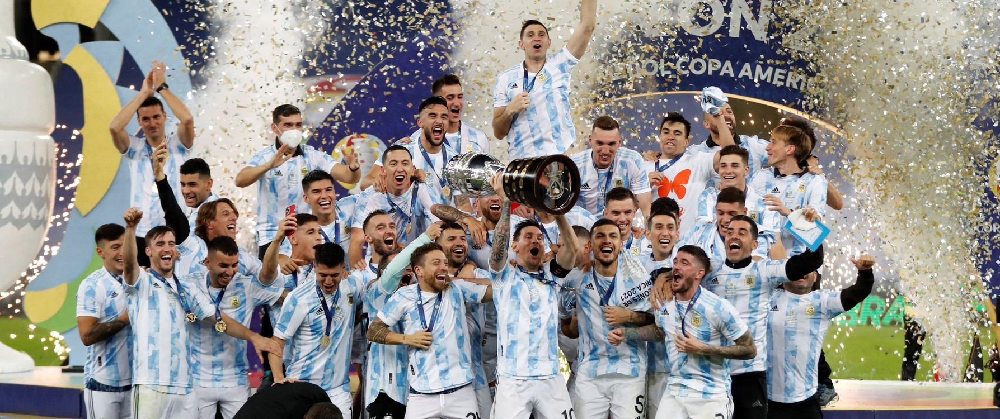
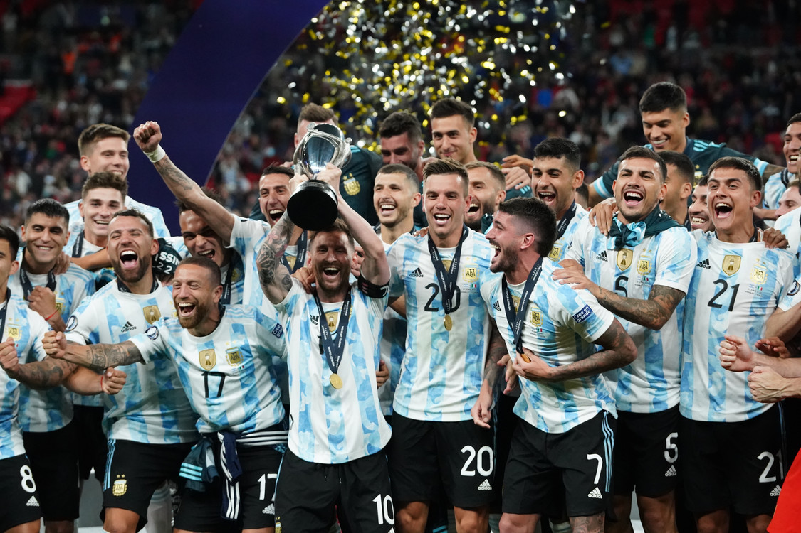
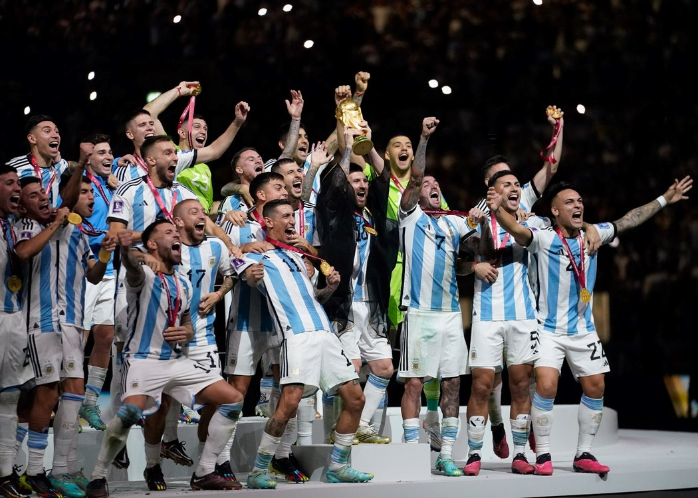

Bienvenidos campeones del mundo
En esta pagina hablaremos del seleccionado Argentino de futbol el cual consiguio todo los titulos que disputo bajo la conduccion de Lionel Scaloni, cortando asi una sequia de 23 anos sin gritar Campeones.
Final copa america disputada en el estadio Maracana de Brasil con victoria 1 a 0 de la seleccion argentina
Finalissima disputada entre Italia y Argentina disputada en el estadio de Wembley con victoria 3 a 0 de la seleccion argentina
Final del mundial 2022 disuptado en Qatar entre argentina y francia con victoria el equipoa albiceleste por penales
